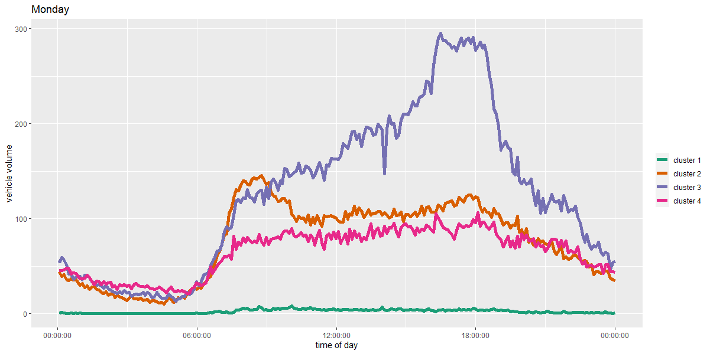

*view this file as a Jupyter notebook*
Dublin employs the Sydney Coordinated Adaptive Traffic System (SCATS) to monitor traffic at key intersections and adapt traffic signals for high priority vehicles like public busses. Periodically, the city releases samples of the traffic counts that the SCATS system records on the SmartDublin open data store. This sample is from January to April 2012, so a lot has changed in Dublin regarding the transit system, traffic levels, and how traffic is collected. The data contains a table with:
- streetSegId - street segment ids which can be matched to an accompanying spatial .gps file
- upperTime - the timestamp losing the previous 6-minute aggregation
- armNumber - an id for the arm where the sensor is located within a street segment id (not used)
- aggregateCount - the number of vehicles detected by the sensor for the given time period (not used)
- flow - ratio of the volume count to the maximum value in a 1-week sliding window
In the future, I will use the forthcoming sample from Jan-Apr 2020 and compare. For now, we can use this older sample to demonstrate the process of clustering time series and learn about the spatial and temporal patterns of commuting in Dublin.
We are going to use the time series created by 4 months of 6-minute resolution data to find prototypical daily time series of 4 unique commuting patterns. Those patterns also exhibit spatial patterns, from which we can differentiate between regions of Dublin and how they experience daily traffic flows. We will do some R data table manipulation, Dynamic Time Warping to determine the 'distance' between sensors' time series, partitional clustering, and then finally ggplot and tmap to view the results.
First, download and unzip the data. It is available from Smart Dublin here.
In R, we'll extract the .dis files (Oracle Discover workbook files, but R can read them as tables) and check for symmetry symmentry
filenames <- list.files(path="YOUR LOCAL FOLDER PATH HERE",
pattern="*.dis")
allfiles <- list()
for(file in filenames){
allfiles[[file]]<-as.data.table(read.table(paste("YOUR LOCAL FOLDER PATH AGAIN",
file,sep=""),
sep=",",
header=TRUE,
strip.white=TRUE))
}
# manually check for daily differences
numobservations <- list()
uniquesensors<-list()
uniquetimestamps<-list()
for(readfile in names(allfiles)){
numobservations[[readfile]] <- nrow(allfiles[[readfile]])
uniquesensors[[readfile]]<-length(unique(allfiles[[readfile]]$streetSegId))
uniquetimestamps[[readfile]]<-length(unique(allfiles[[readfile]]$upperTime))
}
There are some discrepancies in the unique lists. The number of sensors changes, with several being added to the network throughout the 4 month time period. On one date, a couple of time are missing from the time series. Thus, the number of observations fluxuates. But when we create transposed versions of these table which are readable as time series objects for the tsclust package, these discrepancies will be accounted for.
Let's create new tables for each day, with the timestamps in the columns and the street segments as the rows. transposedfiles will contain
#unique list of all of the identifiers of each sensor
allSegIds<-list()
#putting the sensor readings in a time series readable format
transposedfiles <- list()
for(filei in c(1:121)) {
date <- substr(names(allfiles)[filei],7,14)
#the corresponding dates to these indices have inconsistent timing -
# missing measurements, collapsed time series, and/or different timestamps
if (filei %in% c(55, 85)) {
transposedfiles[[date]] <- data.table()
next
}
rnamesjoin <- c()
transpose_ccity <- dcast.data.table(allfiles[[filei]], streetSegId ~ upperTime, fun.aggregate=mean, value.var="flow")
streetSegIDs_ccity <- as.list(transpose_ccity[,1][[1]])
allSegIds<-c(allSegIds, streetSegIDs_ccity)
transpose_ccity <- transpose_ccity[,-1]
rownames(transpose_ccity) <- unlist(lapply(streetSegIDs_ccity, FUN=function(x) toString(x)))
rnamesjoin <- c(rnamesjoin, unlist(lapply(streetSegIDs_ccity, FUN=function(x) toString(x))))
transpose_ncity <- dcast.data.table(allfiles[[filei+121]], streetSegId ~ upperTime, fun.aggregate=mean, value.var="flow")
streetSegIDs_ncity <- as.list(transpose_ncity[,1][[1]])
allSegIds<-c(allSegIds, streetSegIDs_ncity)
transpose_ncity <- transpose_ncity[,-1]
rownames(transpose_ncity) <- unlist(lapply(streetSegIDs_ncity, FUN=function(x) toString(x)))
rnamesjoin <- c(rnamesjoin, unlist(lapply(streetSegIDs_ncity, FUN=function(x) toString(x))))
transpose_scity <- dcast.data.table(allfiles[[filei+242]], streetSegId ~ upperTime, fun.aggregate=mean, value.var="flow")
streetSegIDs_scity <- as.list(transpose_scity[,1][[1]])
allSegIds<-c(allSegIds, streetSegIDs_scity)
transpose_scity <- transpose_scity[,-1]
rownames(transpose_scity) <- unlist(lapply(streetSegIDs_scity, FUN=function(x) toString(x)))
rnamesjoin <- c(rnamesjoin, unlist(lapply(streetSegIDs_scity, FUN=function(x) toString(x))))
transpose_wcity <- dcast.data.table(allfiles[[filei+363]], streetSegId ~ upperTime, fun.aggregate=mean, value.var="flow")
streetSegIDs_wcity <- as.list(transpose_wcity[,1][[1]])
allSegIds<-c(allSegIds, streetSegIDs_wcity)
transpose_wcity <- transpose_wcity[,-1]
rownames(transpose_wcity) <- unlist(lapply(streetSegIDs_wcity, FUN=function(x) toString(x)))
rnamesjoin <- c(rnamesjoin, unlist(lapply(streetSegIDs_wcity, FUN=function(x) toString(x))))
transposedfile <- rbindlist(list(transpose_ccity,
transpose_ncity,
transpose_scity,
transpose_wcity))
rownames(transposedfile) <- rnamesjoin
if (length(which(is.na(transposedfile[,1]))) > 0) {
print(paste("nas in ", date, " index ", filei))
}
transposedfiles[[date]] <- transposedfile
}
allSegIds<-unique(allSegIds)
#convert text to dates and times and store in usable formats
dates<-as.POSIXct(as.numeric(as.character(names(transposedfiles[[1]]))),origin="1970-01-01",tz="GMT")
times <- lapply(dates, FUN=function(x) as.POSIXct(x, format="%H:%M:%S"))
timestamps<-colnames(transposedfiles[[1]])
For each day, of which there are 121 in this data sample, there are 4 tables in transposedfiles - one for the Center City sensors, one for the South City sensors, one for North City and one for West City.
There are several locations where NAs are induced. It is good to know that we have incomplete time series, but these will be taken care of later by not counting them when we create an average daily time series.
This next section does lots of critical data formatting. Since traffic patterns are dependent on the day of the week because of commuting, we have split the time series up into 7 different unique tables, one for each day. From there, this process finds an 'average' time series for each day of the week. Some dates will have upticks in traffic, and other times (bank holidays, for example) will have lower than expected traffic. But averaging each day over the 4 month sample will generate a representative time series for that day of the week, which should be relatively consistent.
randcheck is there to make sure that we have the correct day of the week when working with indices, dates, and modulo. You can check it manually against a 2012 calendar to make sure.
randcheck <- sample(1:121, 3)
#for each day of the week...
for(weekcounter in c(1,2,3,4,5,6,0)) {
totalcounts<-matrix(0, nrow=length(allSegIds), ncol=240)
#counting total vehicles with rows = sensors and columns = timestamp
rownames(totalcounts)<-unlist(lapply(allSegIds, FUN=function(x) toString(x)))
colnames(totalcounts)<-times
nsums<-rep(0, times=length(allSegIds))
names(nsums)<-rownames(totalcounts)
#for each file, which is a day of sensor readings...
for(daycounter in c(1:length(transposedfiles))){
#pick out only the day of the week we are looking at
if(daycounter %% 7 == weekcounter){
if (daycounter %in% randcheck) {
print(paste(names(transposedfiles)[daycounter], " is a ", weekcounter))
}
#get each transposed file - 4 per date (ccity, ncity, scity, wcity)
temptransposed<-as.matrix(transposedfiles[[daycounter]])
rownames(temptransposed)<-rownames(transposedfiles[[daycounter]])
for(segid in rownames(totalcounts)) {
#if the sensor is in this file (each file corresponds to 1 of
# the 4 DCC regions)
if(segid %in% rownames(temptransposed)) {
#skip any NaN values
totalcounts[segid,]<- rowSums(cbind(totalcounts[segid,],temptransposed[segid,]), na.rm = T)
nsums[[segid]]<-nsums[[segid]]+1
}
}
}
}
#set up a matrix which measures the average time series for each sensor
avgOneDaySeries<-matrix(0, nrow=length(allSegIds), ncol=240)
rownames(avgOneDaySeries)<-rownames(totalcounts)
colnames(avgOneDaySeries)<-colnames(totalcounts)
#for each sensor...
for(streetid in rownames(totalcounts)) {
#for each timestamp...
for (timeid in colnames(totalcounts)) {
#find the average
if (nsums[streetid] == 0) {
avgOneDaySeries[streetid, timeid] <- 0
} else {
avgOneDaySeries[streetid, timeid]<-totalcounts[streetid, timeid]/nsums[streetid]
}
}
}
#assign the average matrix to the appropriate day of the week
if (weekcounter==1) {
sunday<-avgOneDaySeries
} else if (weekcounter==2) {
monday<-avgOneDaySeries
} else if (weekcounter==3) {
tuesday<-avgOneDaySeries
} else if (weekcounter==4) {
wednesday<-avgOneDaySeries
} else if (weekcounter==5) {
thursday<-avgOneDaySeries
} else if (weekcounter==6) {
friday<-avgOneDaySeries
} else if (weekcounter==0) {
saturday<-avgOneDaySeries
} else {
print("day of the week error")
}
}
head(monday)
Now we should have daily representative time series for each segmentID in the city's 4 regions. Each one has the same number of timestamps as columns: 240, one for every 6-minutes of a 24-hour cycle. The column names are the same for each day, epoch timestamps representing every 6 minutes on January 1st 2012. When we represent the data as an average time series, we will remove the date from it and only use the time of day.
It is time to run a cluster detection process on each day with the segments and their average daily pattern as the units. The function tsclust explictly takes time series object formatted as we have done it and computes the specified number of clusters based on time series shape and magnitude. There are numerous options to customize the process, including the clustering method, distance calculation, method for deriving the centroid of each cluster, and of course, the number of clusters. After experimenting with various combinations, I found the most interesting clusters to come from the following combination of parameters:
- partitional clustering - divides the series into k clusters exclusively (rather than hierarchically)
- 4 clusters - clusters tend to be hard to distinguish between known commuting patterns over k=4
- pam centroid - the representative centroid time series is defined as the median actual time series from the data within the cluster
- sbd - shape-based distance attempts to cluster series based on their commuting shape, rather than also considering magnitude of traffic
library(dtwclust)
#find clusters
#?tsclust
# type - "partitional", "hierarchical", "tadpole" or "fuzzy"
# distance - "dtw", "dtw2", "dtw_basic", "dtw_lb", "lbk", "sbd", "gak"
# centroid - "mean", "median", "shape", "dba", "pam", "fcm", "fcmdd"
clusters_monday <- tsclust(series= monday, type="partitional",
k = 4L,centroid='pam',
seed=8675309, distance = "sbd")
clusters_tuesday <- tsclust(series= tuesday, type="partitional",
k = 4L,centroid='pam',
seed=8675309, distance = "sbd")
clusters_wednesday <- tsclust(series= wednesday, type="partitional",
k = 4L,centroid='pam',
seed=8675309, distance = "sbd")
clusters_thursday <- tsclust(series= thursday, type="partitional",
k = 4L,centroid='pam',
seed=8675309, distance = "sbd")
clusters_friday <- tsclust(series= friday, type="partitional",
k = 4L,centroid='pam',
seed=8675309, distance = "sbd")
clusters_saturday <- tsclust(series= saturday, type="partitional",
k = 4L,centroid='pam',
seed=8675309, distance = "sbd")
clusters_sunday <- tsclust(series= sunday, type="partitional",
k = 4L,centroid='pam',
seed=8675309, distance = "sbd")
Now view the clusters via their centroids with ggplot.
In the ggplot function, you can uncomment lines 46, 47, and 48 to also include the daily time series of every sensor which belongs to the given cluster. It helps to understand how representative the centroid series is of its members. If you change the day of the week in line 49, also remember to change it in line 33!
centroids_monday <- unlist(clusters_monday@centroids)
centroids_tuesday <- unlist(clusters_tuesday@centroids)
centroids_wednesday <- unlist(clusters_wednesday@centroids)
centroids_thursday <- unlist(clusters_thursday@centroids)
centroids_friday <- unlist(clusters_friday@centroids)
centroids_saturday <- unlist(clusters_saturday@centroids)
centroids_sunday <- unlist(clusters_sunday@centroids)
clusters_list <- rep(c("cluster 1","cluster 2","cluster 3","cluster 4"), each=240)
times_list_date <- rep(as.POSIXlt(unlist(times),origin="1970-01-01", tz="GMT"), times=4)
centroids_frame <- data.frame(times_list_date, clusters_list, centroids_monday, centroids_tuesday,
centroids_wednesday, centroids_thursday, centroids_friday,
centroids_saturday, centroids_sunday)
datalist_monday<-unlist(clusters_monday@datalist)
datalist_tuesday<-unlist(clusters_tuesday@datalist)
datalist_wednesday<-unlist(clusters_wednesday@datalist)
datalist_thursday<-unlist(clusters_thursday@datalist)
datalist_friday<-unlist(clusters_friday@datalist)
datalist_saturday<-unlist(clusters_saturday@datalist)
datalist_sunday<-unlist(clusters_sunday@datalist)
cluster_assignments<-clusters_thursday@cluster
names(cluster_assignments)<-names(clusters_thursday@datalist)
chosen_sensors<-names(cluster_assignments[cluster_assignments==4])
thursday_cluster_members<-unlist(clusters_thursday@datalist[chosen_sensors])
sensors_list <- rep(chosen_sensors, each=240)
times_list2 <- format(rep(as.POSIXlt(unlist(times),origin="1970-01-01"), times=length(chosen_sensors)), "%H:%M:%S")
datalist_frame<- data.frame(times_list2, sensors_list, thursday_cluster_members)
members_plotted <- clusters_monday
cluster_assignments<-members_plotted@cluster
names(cluster_assignments)<-names(members_plotted@datalist)
chosen_sensors<-names(cluster_assignments[cluster_assignments==4])
cluster_members<-unlist(members_plotted@datalist[chosen_sensors])
sensors_list <- rep(chosen_sensors, each=240)
times_list2 <- rep(as.POSIXlt(unlist(times),origin="1970-01-01"), times=length(chosen_sensors))
datalist_frame<- data.frame(times_list2, sensors_list, cluster_members)
ggplot() +
#geom_line(data=datalist_frame, aes(x=times_list2,
# y=cluster_members,
# group=sensors_list)) +
geom_line(data=centroids_frame, aes(x=times_list_date, y=centroids_monday,
colour=clusters_list), size=2) +
labs(x="time of day", y="vehicle volume", colour="") +
scale_color_brewer(type="qual", palette="Dark2") +
scale_x_datetime(labels=date_format("%H:%M:%S"))

Cluster 1 appears as a relatively low traffic set of sensors with a small morning peak.
Cluster 2 is indicative of high morning commute locations. Cluster 2 is similar in shape to cluster 1 in this way, with one difference; it also has a general increasing trend of traffic folowing the morning peak through the evening rush hour. Cluster 2 might be the most representative of a typical commute, with 2 noticable heights of traffic in the morning and evening corresponding with the work day
Cluster 3's most recognisable feature is the large evening peak and general increasing trend up to that peak. Evening rush hour is to blame for this dramatic pattern.
Finally, cluster 4 has a more stable pattern throughout the day. Where Clusters 1 and 2 have morning peaks, and 2 and 4 have evening peaks, sensors in cluster 3 are the most consistent.
The final step is to map the sensor locations with their cluster assignments and see if the representative cluster shapes match the expectation of how commuting in the city proceeds.
We'll use the GPS location files for each of the 4 Dublin regions that were in the unzipped folder. There is one file for each region and calendar day, which is redundant, but more sensors are added through the 4 month sample. So we'll just take the file from the last day of the sample to make sure that we have the most updated collection of segmentIDs.
library(sp)
library(tmap)
ccity_locations<-as.data.frame(read.table("SCATS-Dublin/CCITY_20120422.acc_out.gps",
sep=",",
header=TRUE,
strip.white=TRUE))
ccity_locations<-unique(ccity_locations, by="streetSegId")
#segid 1362 does not exist in the cluster data, so remove it
ccity_locations<-ccity_locations[-114,]
ccity_locations<-ccity_locations[order(ccity_locations[,1]),]
ncity_locations<-as.data.frame(read.table("SCATS-Dublin/NCITY_20120422.acc_out.gps",
sep=",",
header=TRUE,
strip.white=TRUE))
ncity_locations<-unique(ncity_locations, by="streetSegId")
ncity_locations<-ncity_locations[order(ncity_locations[,1]),]
scity_locations<-as.data.frame(read.table("SCATS-Dublin/SCITY_20120422.acc_out.gps",
sep=",",
header=TRUE,
strip.white=TRUE))
scity_locations<-unique(scity_locations, by="streetSegId")
scity_locations<-scity_locations[order(scity_locations[,1]),]
wcity_locations<-as.data.frame(read.table("SCATS-Dublin/WCITY1_20120422.acc_out.gps",
sep=",",
header=TRUE,
strip.white=TRUE))
wcity_locations<-unique(wcity_locations, by="streetSegId")
wcity_locations<-wcity_locations[order(wcity_locations[,1]),]
GPS_locations<-rbind(ccity_locations, ncity_locations, scity_locations, wcity_locations)
GPS_locations<-GPS_locations[!rownames(GPS_locations) %in% c("19683", "1188", "1453"),]
segids_clusters_monday<-clusters_monday@cluster
segids_clusters_tuesday<-clusters_tuesday@cluster
segids_clusters_wednesday<-clusters_wednesday@cluster
segids_clusters_thursday<-clusters_thursday@cluster
segids_clusters_friday<-clusters_friday@cluster
segids_clusters_saturday<-clusters_saturday@cluster
segids_clusters_sunday<-clusters_sunday@cluster
names(segids_clusters_monday)<-names(clusters_monday@datalist)
names(segids_clusters_tuesday)<-names(clusters_tuesday@datalist)
names(segids_clusters_wednesday)<-names(clusters_wednesday@datalist)
names(segids_clusters_thursday)<-names(clusters_thursday@datalist)
names(segids_clusters_friday)<-names(clusters_friday@datalist)
names(segids_clusters_saturday)<-names(clusters_saturday@datalist)
names(segids_clusters_sunday)<-names(clusters_sunday@datalist)
GPS_locations$monday<-segids_clusters_monday
GPS_locations$tuesday<-segids_clusters_tuesday
GPS_locations$wednesday<-segids_clusters_wednesday
GPS_locations$thursday<-segids_clusters_thursday
GPS_locations$friday<-segids_clusters_friday
GPS_locations$saturday<-segids_clusters_saturday
GPS_locations$sunday<-segids_clusters_sunday
coordinates(GPS_locations)<- ~longo+lato
coordinates(ccity_locations)<- ~longo+lato
#4 points have mis represented GPS coordinates. Remove them
GPS_locations <- GPS_locations[-which(GPS_locations@coords < -10),]
tmap_mode('view')
cluster_map <- tm_shape(GPS_locations) + tm_dots(size=0.04,col="monday", style="cat", palette="Dark2")
click the image for an interactive version in a new window

The spatial patterns in Dublin make sense. Cluster 4 (pink color) is largely concentrated in downtown and on typically busy areas - Dame Street in front of Trinity College, South Circular Road near Kilmainham, and O'Connell Street. Cluster 4 is indicative of consistently high traffic through the day, with less pronounced morning and evening peaks. The busiest downtown street are going to stay busy all day, versus arterial roads.
Clusters 2 and 3 have morning and evening peaks, and largely, they occur throughout the city, but in different directions. At intersections where sensors are set up, frequently 2 of the 4 converging lanes of travel are in cluster 2, and 2 of them are in cluster 3. Look closely at Naas Road in southwest Dublin. Or Old Cabra Road in northwest Dublin. These major routes into and out of the city become jammed in one direction at least twice during the day.
For further exploration, we could examine the arm number and determine the direction of travel based on the prototypical traffic pattern. Or create more clusters and see if there are more than 4 typical shapes to the daily commute. And then look at subsequent years' samples. Next we'll compare samples from 2018 and 2020